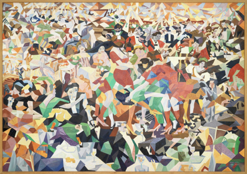

+ Current Projects
+ Bookshelf
Below is a running list of the books he cherishes. This list is in no particular orderAirline Visual Identity 1945-1975
It Can't Always be Caviar
Landmark Cases in Forensic Psychiatry
The Jungle Effect
Community Capitalism
Banker to the Poor
The Armory Show at 100
The Art of Alfred Hitchcock
Living to be 100: 1200 Who Did and How They Did it
History of Economic Analysis
Academic Legal Writing
Agent Josephine
Causal Inference: The Mixtape
Voice & Vision: A Guide to Writing Nonfiction
Are Judges Political?
Introduction to Mathematical Economics
The Information Master: Jean Baptiste Colbert's Information System
The Writing of Economics
The Economics of Innoncent Fraud
Ambassador's Journal
Strategies of Commitment and Other Essays
The Ecology of Human Development
Shattering: Food Politics and the Loss of Genetic Diversity
The Anatomy of Power
The Idea Factory: Bell Labs and the Great Age of American Innovation
How Judges Think
A Tenured Professor
The Affluent Society
Sorcerers Apprentices: 100 Years of Law Clerks at the Supreme Court
The Code of Capital
Micromotives and Macrobehavior
What the Best Law Teachers Do
Setting the Table: The Transforming Power of Hospitality in Business
Business Applications Using C++
Lucky Peach Magazine
The Great Crash, 1929
Paris: Buildings and Monuments
The Federal Courts Challenge and Reform
The Great Good Place
Five Hundred Buildings of New York
The First Crash Lessons From the South Sea Bubble
Writing Ethnographic Field Notes
The Visual Display of Quantitative Information
Tipping Point: How Little Things Can Make A Big Difference
Freakonomics: A Rogue Economist Explores the Hidden Side of Everything
C++ for Business Programming
Kitchen Confidential: Adventures in the Culinary Underbelly
Becoming by Michelle Obama
The Classical School: The Birth of Economics
Ogilvy On Advertising
Steve Jobs by Walter Issacson
Barron's Dictionary of Banking Terms
Handmaid's Tale
The Lula Cafe Cookbook
Calvin and Hobbes
The Lorax
The Brazilian Economy: Growth and Development
Culinary Artistry